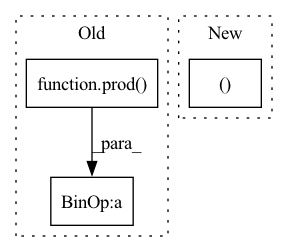

Pattern ID :16469
Before Change
loss = F.mse_loss(Y_hat, y, reduction="none")
if not is_sum_over_tasks:
n_tasks = prod( Y_hat[0, 0, ...].shape)
loss = loss / n_tasks // takes an average over tasks
batch_size = loss.size(0)
loss = loss.view(batch_size, -1).sum(keepdim=True, dim=-1)After Change
loss = atleast_ndim(loss, 3) // addd n_tasks = 1 if not given
// n_tasks = prod(Y_hat[0, 0, ...].shape)
batch_size, Y_dim, *_ = loss.shape
// shape = [batch_size, n_tasks]
loss = loss.view(batch_size, Y_dim, -1).mean(keepdim=False, dim=1)In pattern: SUPERPATTERN
Frequency: 4
Non-data size: 3
Instances Fragment ID: 55408712
Project Name: yanndubs/lossyless
Commit Name: c8ef0b6b635ba0e212baf30a60596f78e08a56fa
Time: 2021-02-22
Author: yanndubois96@gmail.com
File Name: lossyless/helpers.py
M Class Name: AnonimousClass
N Class Name: AnonimousClass
M Method Name: mse_or_crossentropy_loss(4)
N Method Name: mse_or_crossentropy_loss(4)
M Parent Class:
N Parent Class:
M File Name: lossyless/helpers.py
N File Name: lossyless/helpers.py
M Start Line: 437
M End Line: 442
N Start Line: 444
N End Line: 465
Before Change
float4 B = b_g[gid];
res_g[gid] = convert_float4(+code_for_op[op]+);
})
binop([roundup(prod( ret.shape) )// 4], None, x.cl, y.cl, ret.cl)
return ret
def reduce_op(op, inp, new_shape):After Change
return ret
def unary_op(op, x): return elementwise_op([("A", x)], code_for_op[op])
def binary_op(op, x, y): return elementwise_op([("A", x ), ("B", y)], code_for_op[op])
def contiguous(x:GPUBuffer): return x if x.st.contiguous else unary_op(UnaryOps.NOOP, x)
def reduce_op(op, inp, new_shape): Fragment ID: 55408714
Project Name: geohot/tinygrad
Commit Name: d05e7c291ad428ba3584a1529e6d71c264c5b7b9
Time: 2022-06-19
Author: 72895+geohot@users.noreply.github.com
File Name: tinygrad/llops/ops_gpu.py
M Class Name: AnonimousClass
N Class Name: AnonimousClass
M Method Name: binary_op(3)
N Method Name: binary_op(3)
M Parent Class:
N Parent Class:
M File Name: tinygrad/llops/ops_gpu.py
N File Name: tinygrad/llops/ops_gpu.py
M Start Line: 78
M End Line: 88
N Start Line: 83
N End Line: 83
Before Change
float4 A = a_g[gid];
res_g[gid] = convert_float4(+code_for_op[op]+);
})
unop([roundup(prod( ret.shape) )// 4], None, x.cl, ret.cl)
return ret
def binary_op(op, x, y):After Change
ewop([prod(ret.shape)], None, ret.cl, *[buf.cl for _, buf in bufs])
return ret
def unary_op(op, x): return elementwise_op([("A", x )], code_for_op[op])
def binary_op(op, x, y): return elementwise_op([("A", x), ("B", y)], code_for_op[op])
def contiguous(x:GPUBuffer): return x if x.st.contiguous else unary_op(UnaryOps.NOOP, x)
Fragment ID: 55408709
Project Name: geohot/tinygrad
Commit Name: d05e7c291ad428ba3584a1529e6d71c264c5b7b9
Time: 2022-06-19
Author: 72895+geohot@users.noreply.github.com
File Name: tinygrad/llops/ops_gpu.py
M Class Name: AnonimousClass
N Class Name: AnonimousClass
M Method Name: unary_op(2)
N Method Name: unary_op(2)
M Parent Class:
N Parent Class:
M File Name: tinygrad/llops/ops_gpu.py
N File Name: tinygrad/llops/ops_gpu.py
M Start Line: 67
M End Line: 75
N Start Line: 82
N End Line: 82
Before Change
res_g[gid] = out;
})
reduce([prod(ret.shape)], None, inp.cl,
i32(prod(inp.shape)// prod( ret.shape) ), ret.cl,
i32(prod(ret.shape)), i32(len(ret.shape)),
buffer_np(np.array(inp.shape, dtype=np.int32)),
buffer_np(np.array(ret.shape, dtype=np.int32)))After Change
view = View(ret.shape, strides_for_shape(inp.shape))
acc = 1
loop_start, loop_end = [], []
for i,o in list(zip(inp.shape, ret.shape))[::-1]:
if i != o: // reduce axis
assert o == 1 Fragment ID: 55408711
Project Name: geohot/tinygrad
Commit Name: 906cce9916cb43ed6d28c2d950fb17420dd60085
Time: 2022-06-14
Author: george@comma.ai
File Name: tinygrad/llops/ops_gpu.py
M Class Name: AnonimousClass
N Class Name: AnonimousClass
M Method Name: reduce_op(3)
N Method Name: reduce_op(3)
M Parent Class:
N Parent Class:
M File Name: tinygrad/llops/ops_gpu.py
N File Name: tinygrad/llops/ops_gpu.py
M Start Line: 95
M End Line: 124
N Start Line: 96
N End Line: 117